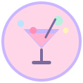

Neon Peach
שירות לקוחות
🔔
0
👩
🏠
דאשבורד
📋
פניות
📅
הערב
↺ איפוס דמו
היי מאיה 👋
פניות לפי יום · 14 ימים
פניות לפי סוג
פניות לפי ערוץ
🚨 דורש טיפול דחוף
פניות
חדש ← ישן
לפי עדיפות
לפי סטטוס
הזמנות להערב